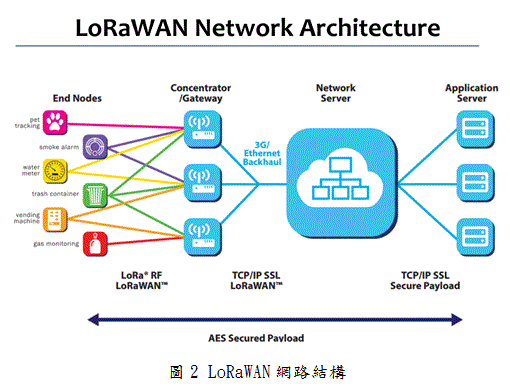
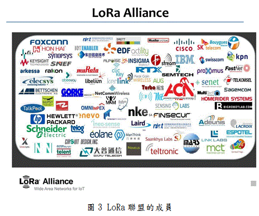

|
主講人:黃能富 教授
- 國立清華大學特聘教授, 資訊工程學系教授
- 中央研究院資訊科技創新研究中心 合聘研究員
- 電機資訊學院院長
- 研究領域 (Research Areas)：
P2P 網路技術與應用(P2P Networks and Applications)
網路安全(Network Security)
|
|
【演講內容】
過去無線通信的方法有諸多缺點，例如:耗電、通信距離不夠…等，現在使用新的LoRa技術可以實現長距離、低功耗的無線通信之後，就可以滿足物聯網應用需求，也因此快速受到學界及產業界的關注，並已開始運用於智慧城市與智慧工業的基礎建設中。
物聯網(IoT)時代下，有些裝置不需要傳送高資料量，但卻需要低功號而穩定的連結方式，來維持長時間的運作，因此促成功耗無線廣域網路(LPWAN)如LoRaWAN、SIGFOX漸受矚目。與SIGFOX相比，LoRaWAN(Long Range Wide Area Network)因擁有較多電信商投入，加上是公開網路，並能於雜訊位準(Noise Level)以下維持運作，故較多廠商採用該技術。

此外，LoRaWAN的網路結構(圖1)是由節點(Nodes)、閘道器(Gateway)、網路伺服器
(Network Server)、應用伺服器(Application Server)所組成(圖2)當物聯網前端感知器蒐集資料後，會經過閘道器和網路伺服器，以及應用伺服器後才能分析資料，從而獲得有用的大數據(Big Data)，而大數據有機會成為可買賣的財富，所以誰擁有大數據將是重要的獲利關鍵。

在技術方面，LoRa使用chirp spread spectrum 技術來實現低成本、抗干擾、長距離的無線通信，因此LoRaWAN對背景的雜訊（noise）、干擾（interference）以及自體多路徑干擾
（Multipath interference）有免疫力，對人為的刻意干擾（jamming）訊號有良好的抵禦能力，這也是展頻最早應用於軍方通訊系統中對抗人為的干擾重要原因其一。
換言之，即使在各國開放頻段有限的情況下，當物聯網蓬勃發展、感測節點暴增之際，而導致雜訊水平(Noise Floor)上升、拉高雜訊位準時，LoRaWAN也能有效操作。
另外，LoRA聯盟(圖3)在2015年3月成立，成員包括:IBM、Cisco、HP、Semtech…，並且提出了RoLaWAN R1.0的規範，將會成為未來物聯網的重要規範。

在應用方面，台北市資訊局與正文科技合作，在臺北市建立以LoRa為通訊技術的大型戶外IoT實驗網路，於2016年成立一實驗平台(圖4)，讓想實驗戶外物聯網應用的團隊能免費實驗各種物聯網的創新服務，市政府規劃以LoRa通訊技術為整個實驗網路，利用LoRa低功率、長距離通訊的特色，在北市12個行政區公所頂樓架設基地台，涵蓋台北市271平方公里範圍，另外IBM也參與北市的物聯網實驗平台，提供Bluemix雲端開發平台，讓業者可以開發使用。
物聯網的時代即將到來，過去受限於距離與功耗的因素，雖然感測器的技術已經成熟，但感測器收集到的資料卻無法長距離的傳輸，現在使用了LoRa的技術，終於突破了過去的困境，透過LoRaWAN的應用，可以讓物聯網的時代加速到來。
【圖片來源】
中山大學 資訊工程學系 專題演講
http://cse.nsysu.edu.tw/files/14-1091-156061,r3083-1.php?Lang=zh-tw
台北市LOT實驗平台報名網站
http://taipeismartcity.kktix.cc/events/lora3
|  回首頁
回首頁